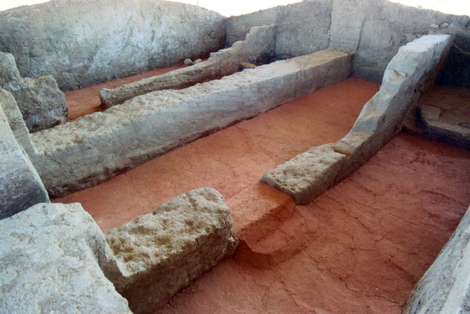

Prehistoria y protohistoria
Se han encontrado numerosos restos de industria lítica en la cuenca del arroyo “El Molar”, siendo significativa la concentración
de éstos en torno a la presa de “El Paredón”. Abundan entre éstos las hachas pulimentadas y mazas metalúrgicas, además de grabados
que se acercan tipologicamente a las insculturas desarrolladas en la Edad del Bronce.
De esta etapa, son dos importantes petroglifos que se pueden contemplar en la finca “Gamitas” y en los “Barrancos”, yacimientos
que denotan grandes paralelos con los hurdanos.
En las cercanías del Guadalefra y el río Zújar se han documentado varios indicios de citanías protohistóricas en lo alto de cerros,
si bien, nunca se han excavado para ver el alcance de tales manifestaciones.
Del mismo modo, abundan en todas las cercanías del núcleo urbano numerosos útiles del pueblo prerromano, representados en su
mayoría por molinos barquiformes. Todos estos restos, hay que enmarcarlos cronológicamente en torno al II milenio y mediados
del I a d. C, algunos ya en la Edad del Hierro
EDIFICIO DE LA MATA
La Mata Es uno de los elementos más representativos de la protohistoria extremeña, destacando la conservación de sus muros de
tapial sobre paramento de mampostería con los que forman varias dependencias o habitáculos.
La monumentalidad del edificio queda de manifiesto en su planta en forma de “U”, más aún contando con que tubo dos plantas y
probablemente terraza, llegando a alcanzar los 6 metros de altura total. Se puede apreciar su fisonomía de “casa fuerte” gracias
a sus dos torres, muro perimentral de mampostería, terraplén y foso alrededor.
Todo ello lo enmarca en la denominada “arquitectura de prestigio” que se desarrolla en el suroeste peninsular entre los siglos
VIII y V a. d. C.
El monumento está datado en el periodo orientalizante, en torno al ecuador del I milenio a. d. C. (siglos VI-V a. d. C.), y cabe
destacar que para su completa excavación se desmontaron estructuras posteriores sobre él, de época romana.
En las cercanías se conservan los restos de una necrópolis de incineración contemporánea al yacimiento, donde se aprecia una gran
tumba con masa tumular entre otras ya muy arrasadas.
ROMANIZACION
Son muchos los lugares de Campanario donde encontramos indicios de esta romanización, centrados sobre todo en época de Augusto
y llegando incluso a tiempos del emperador Teodosio,
en el siglo IV d. C. La numismática y la abundancia de terra sigillata en los núcleos de concentración de villas,
tales como la de “El Paredón”, las cercanas a La Guarda, “Las Viñas” e incluso la de “La Fuente de los Moros”,
ha sido providencial para datar la ocupación romana en estas tierras, que al parecer perduró hasta bien entrado el siglo V y VI,
a juzgar por algunos ejemplos de esta cerámica y utensilios con decoración tardorromana.
Entre los elementos más destacados y atractivos al público figuran el Recinto Fortificado tipo torre de la Portugalesa,
fechado entre el primer cuarto del siglo I a. C. y finales del siglo I d. C., y la propia Presa del Paredón,
que aunque se duda de su cronología, es susceptible de ser encuadrada en esta época.
Mención especial merece los restos encontrados en las cercanías de Piedraescrita.
